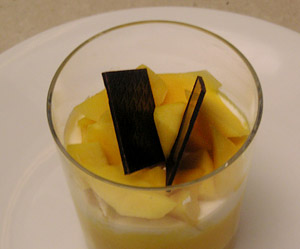

Mango Trifle
5 von 62 Mangos schälen und 3/4 des Fruchtfleisches pürieren und mit etwas Zitronensaft abschmecken. In einem beliebigen Glas die erste Schicht mit dem Mangosaft abfüllen. Mit einer Mischung aus Halbfettquark sowie etwas Vanillezucker fortfahren. Abschliessend der letzte 1/4 des Mangos in mundgerechte Stücke geschnitten über die Masse geben. Mit zwei Schokoblätten garnieren.
